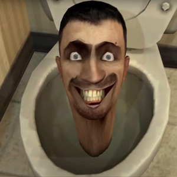

About the Skibidi Lore
The skibidi toilets are here to destroy the world but the plungermen are defending it. Ts started on YT. Here you can see the first skibidi toilet
The first ever skibidi toilet
Plungerman’s characteristics
- He strong
- He kind
- He big
- He likes plunges
- He likes liking your like